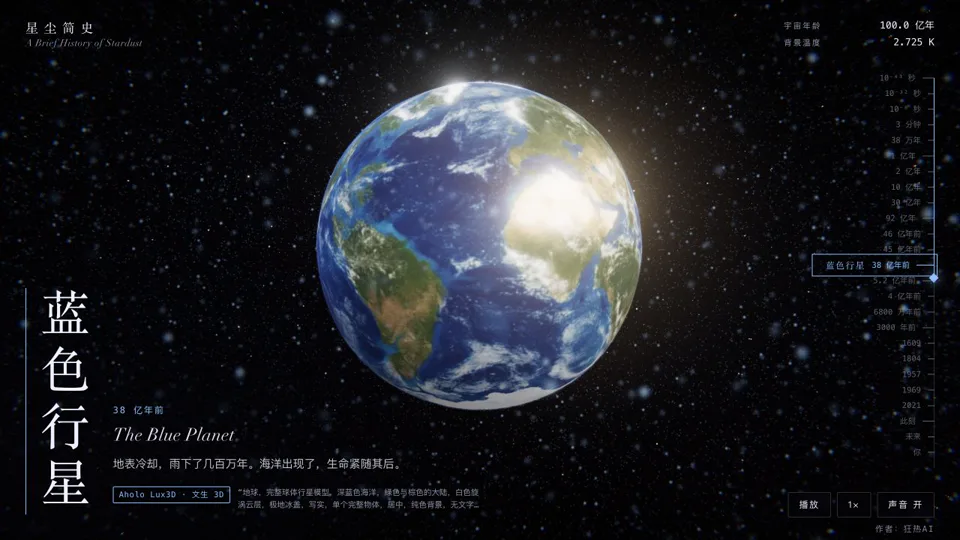

3D 互动宇宙短片
星尘简史
从奇点、第一代恒星看到地球和人类登月，沿时间轴走过 138 亿年。
点开始后，拖动可转动视角。想先看星系、蓝色行星或登月，可以直接点时间尺跳过去，也可以调整播放速度。
进入星尘简史常见问题
免费，打开网页即可直接体验，不需要注册账号、付费或下载安装包。
《星尘简史》点击开始后可拖动旋转 3D 视角，点击右侧时间尺可跳转到不同宇宙阶段；《国贸不打烊》在电脑上用 WASD 骑车，在手机或平板触屏设备上使用屏幕上的方向与特技按钮。
两款作品均为浏览器内运行的 3D 互动体验，需要使用支持 JavaScript 与 WebGL 的现代桌面或移动浏览器。
不需要。两款网页作品独立运行在浏览器中，与本站的 iOS、Mac 应用和 Chrome 扩展互不依赖。